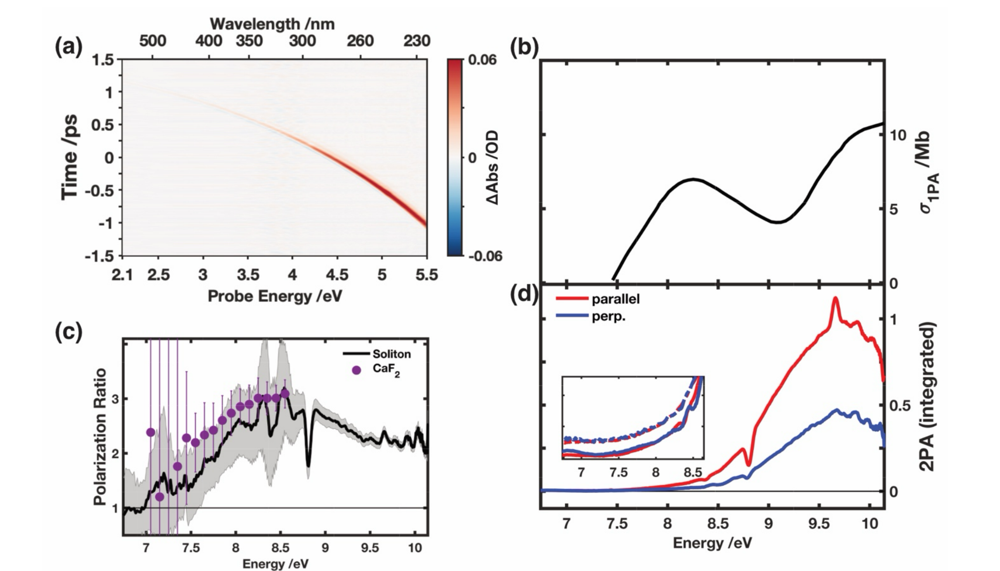

        <section>
          <h3 style="margin: 0 0 0.4em;">Two-Photon Absorption of Water</h3>
          <div style="display: flex; gap: 1.2em; align-items: center;">
            
            <div style="flex: 1; font-size: 0.40em;">
              <div class="col-box" style="border: 1px solid #ddd; border-radius: 8px; padding: 0.7em 0.9em;">
                <ul style="margin: 0; padding-left: 1.2em;">
                  <li>4.6 eV pump + soliton probe reaches 6.8&ndash;10.2 eV combined &mdash; the water band-gap, inaccessible one-photon</li>
                  <li>Polarization ratio (c) resolves overlapping excited-state symmetries</li>
                </ul>
              </div>
            </div>
          </div>
          <p class="slide-footnote"><a href="https://doi.org/10.1021/acs.jpclett.5c04072">Godínez Castellanos <em>et al.</em>, <em>J. Phys. Chem. Lett.</em> <strong>17</strong>, 2634&ndash;2643 (2026)</a></p>
          <aside class="notes">
            <ul>
              <li>Probe validation: a fully non-resonant, well-understood system (bulk liquid water) used to check bandwidth, polarization purity, and instrument response function — different technique from TA, included as a benchmark.</li>
              <li>The A-band (1^1B1, ~8.3 eV) seen in 1PA is nearly absent in 2PA — Laporte forbidden for the oxygen-centered transition, a nice sanity check that the probe reproduces known physics.</li>
              <li>Pulse FWHM instrument response: 70-80 fs visible, degrading to 160 fs deep UV due to larger group-velocity dispersion across the huge soliton bandwidth — worth noting as a limitation.</li>
            </ul>
          </aside>
        </section>
